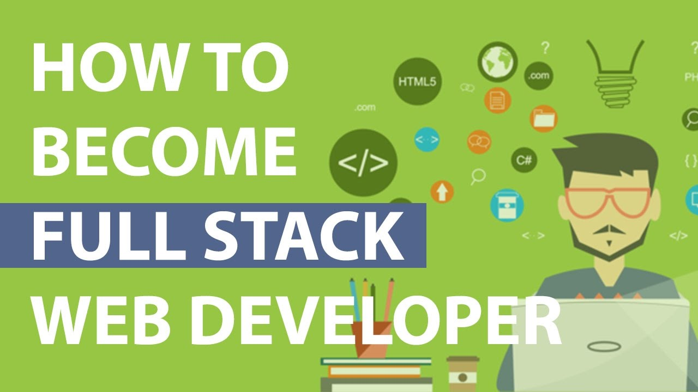
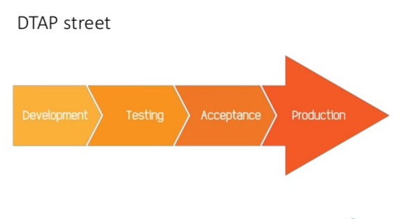
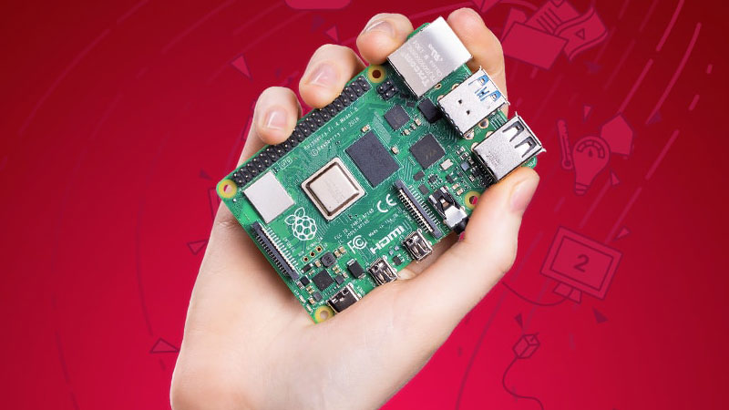
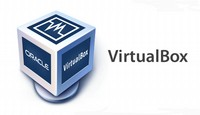

The Web
Categorie
Full Stack Development
Profielen met Skills set
 Een website en of App ontwikkelaar kan met behulp van reeks van technieken, dus zonder gebruik van kant en klare hulpmiddelen zoals CMS of Web Builder, ideeen omzetten naar werkelijkheid. Het is een uitermate complexe omgeving en ontwikkeling geschiedt door speciaal daartoe opgeleide medewerkers.
Ontwerpers, bouwers en beheerders “die alles kunnen” worden Full Stack Developers genoemd met dus veel zéér specialistische kennis, kunde en vaardigheden van/over de stack/stapel technieken van begin-tot-eind end-to-end om werking van website en of App mogelijk te maken.
Alle tools beheersen, de Full Stack, is zó veelomvattend dat het op zich geen streven is of hoeft te zijn om dat te bereiken. Het "helemaal" beheersen van slechts één gedeelte is ambitieus genoeg.
Voorbije decenia is het vakgebied dan ook geevolueerd naar onderverdeling van kennisgebieden met daarbij behorende vaardigheden. De opbouw van dit gedeelte van The Web is dan ook op basis daarvan, en laat zich vertalen naar profielen met skill set.
- Profielen met Skill set
-
Basic Front End Web Developer
Full Fledged Front End Web Developer
Back End Web Developer Software
Back End Web Developer Database
Full Stack Web Developer alles gecombineerd in één persoon
Native app Developer Android, iOS, Windows, Fuchsia
* voor navigatie naar profiel druk op betreffende functie
OTAP - DTAP

Ontwikkeling, Test, Acceptatie en Productie, afgekort OTAP is de naam van een methodiek die wordt gebruikt in de ICT. De hoofdwoorden in de naam geven de fases aan die onder andere in de softwareontwikkeling doorlopen worden. Het Nederlandse begrip is afgeleid van het Engelse DTAP: Development, Testing, Acceptance and Production.
→ zie: Wikipedia OTAP
Veel, zo niet alle tools kunnen geinstalleerd worden op gebruikers “daily driver”-computer (de P uit OTAP). Echter, naar mate R&D in complexiteit toeneemt is het te overwegen om een “dedicated” ontwikkel en test omgeving in te richten omdat tijdens experimenteren met allerlei hightech software de werking van computer kan worden verstoord, of daardoor gewoon volloopt met ballast, of niet uitgesloten de werking of security van bestaande programma’s negatief kan beinlvoeden.
- Varianten in opzet van OTAP-omgeving
-
Op daily driver installatie van Virtual Machine zoals VirtualBox of VMware
Op daily driver installatie van dual boot met 2e of meer OS
Stand alone dedicated 2e computer inrichten zoals Pi4 of ombouwen bestaande computer
In de cloud huren Virtual Machine bij Google GCP, AWS, Azure of Oracle
Cloud huren kan via shared hosting met meerdere klanten op één server, of
Cloud huren kan via Virtual Private Server is dedicated "eigen" machine
Bovenstaande eerste twee OTAP daily driver opties zijn 98% goed, behalve dan dat er geen fysieke functiescheiding van apparaten is, met dus inherent mogelijk integriteit issues. Denk bijv. aan router port forwarding naar VirtualBox LAN IP adres en gestel als IP adres loopt via localhost dan staat er een deur (port) in firewall van daily driver open. Of, niet bij Windows maar wel bij Linux is het standaard zo dat bij dual boot in Linux, gebruiker ook in nevenliggende Windows file systems kan met dus potentieel aldaar verstoring bij onoordeelkundig gebruik.
Bovenstaande laatste twee OTAP huuropties kosten maandelijks out-ot-the-pocket geld en dat kan voor hobby na een tijdje qua bedrag oplopen wat dan op zich kan gaan irriteren, maar als geld geen belemmering is, of voor bedrijven wél een uitkomst.
 Om 100% fysieke functie scheiding te verkrijgen is voor OTAP computers mondiaal veel gebruikt, een stand alone Single Board Computer (SBC). Er zijn vele SBC varianten te koop, waarvan de Raspberry Pi de meest bekende en gebruikte is.
→ zie: Handleiding DIY Pi4 computer
→ zie: Handleiding installatie Linux als dual boot of dedicated stand alone computer
→ zie: Kopen kant en klaar Linux laptop
- VirtualBox
-
 VirtualBox is een voor thuisgebruik kostenloos maar bedrijven betaalde App om "ander" besturingssystemen te draaien op eigen computer. Dit gebeurt op basis van virtualisatie. VirtualBox is beschikbaar voor Windows, macOS, Linux, OS/2, Solaris en Unix.
→ zie: Wikipedia VirtualBox - VirtualBox Virtual Machine
-
Met VirtualBox kunnen virtuele machines (VM) worden aangemaakt, vergelijkbaar met huren van een VM bij hosting bedrijf alleen dan zelf doen op eigen computer. De hiervoor ondersteunde bestandsformaten zijn VDI, VMDK, VHD, HDD, QED en QCOW. VirtualBox emuleert computer hardware en beschikt daarnaast over gastuitbreidingen waaronder MS Fonts en integratie met de host zoals gedeelde folder tussen host en VB gast.
→ zie: YouTube Videotorial VirtualBox installatie voor beginners
- VirtualBox Virtual Server
-
VirtualBox kan onder andere ook gebruikt worden om een webserver te simuleren (VS), vergelijkbaar met huren van een VPS bij hosting bedrijf alleen dan zelf doen op eigen computer. (Op een webserver draait meestal Apache2 of NginX als server programma, maar dat is nu niet het topic). Bij in dit geval dan eigen VS dient die met een uniek eigen LAN IP adres benaderbaar te zijn.
Om dit te bereiken dienen juiste VB netwerk settings zijn ingesteld. Zie in onderstaande videotorial voor mogelijke opties waaronder Host Only Netwerk die ook het internet op kan wat handig is voor updates zoeken van server software, of Internal Network die niet het internet op kan, hetgeen handig is ingeval van testen waarbij de omgeving gelijk móet blijven.
- VirtualBox inloggen via SSH
-
Het is mogelijk om vanuit host computer cq VB omgeving waar gebruiker op is ingelogd, in te loggen op elke computer of virtuele omgeving aangesloten op het LAN of internet door middel van Secure Shell. Indien gewenst kan dat SSH inloggen dus ook op VirtualBox omgeving, want dat maakt beheer van die VB omgeving een stuk handzamer. Voor het initieel opzetten van SSH connectie is minimaal nodig het target (LAN/WAN) IP adres.
→ zie: Wikipedia SSH→ zie: YouTube Videotorial VirtualBox Netwerk en SSH toegang
- VirtualBox key based login
-
In vorige item ging het over via SSH inloggen op andere omgeving met gebruikmaking van loginnaam en password. Dat inloggen met loginnaam en password is op het internet niet secure genoeg want inloggen met password is hack gevoelig. Daarvoor in de plaats kan ook worden ingelogd op andere omgeving weliswaar mét loginnaam maar zónder password!
Daarvoor in de plaats komt een secure key van duizenden karakters. Deze key based SSH verbinding dient eenmalig te worden opgezet en werkt daarna helemaal prima. Key based SSH login zonder mogelijkheid van password login op remote omgeving is mondiaal "de industrie standaard", dus het is aan te bevelen om ook in eigen beheer deze manier van opereren te hanteren.
- VirtualBox login vanaf Internet
-
Ingeval gebruiker de VirtualBox vanuit het internet wil kunnen benaderen dient de eigen router waarachter VS of VM is aangesloten, ingesteld te worden met port forwarding. Dit is niet zonder security risico's. Indien gewenst fixeer dan binnen VB het LAN IP adres bij Netwerk Settings Advanced. Dit fixeren van vast IP adres van VB omgeving is ook al in vorige items aan de orde geweest. Te doen for port forwarding is login via browser op eigen router (adres is meestal 192.168.178.1) en volg de instructie in onderstaande videotorial.
- Op internet maskeren van eigen IP adres
-
In video hierboven wordt uitgelegd om security issues welke gepaard gaan met openstellen en "bekendmaken" van eigen IP adres in enige mate te beperken via
→ Kopen eigen domeinnaam
→ Aldaar via C-Panel instellen A-record naar eigen static IP adres
→ En als eigen IP adres dynamic is (DDNS) zie volgende item
Het is een aanrader om dat inderdaad zo te doen.→ zie: Kopen Domeinnaam
- Dynamic IP adres (DDNS)
-
Behoudens bedrijven hebben meeste internet gebruikers een dynamisch IP adres. Dat wil zeggen dat providers zoals Ziggo, KPN etc. bij gebruikers niét garanderen dat hun IP adres altijd hetzelfde blijft. Om er voor te zorgen dat bij DNS Registrar altijd op A record(s) het juiste IP adres staat vermeld, zónder dat elke dag handmatig te controleren en indien nodig alsdan handmatig de A records te wijzigen, is er een mechanisme om dat proces te automatiseren.
Onderstaand wordt ook beheertool Vagrant genoemd, en met reden want alhoewel dat tool voor gevorderden is cq meestal niet aan het begin van web developers guide aan de orde komt, toch hierbij alvast even vermeld dat van de nood (het niet hebben van een vast IP adres) een deugd gemaakt kan worden, namelijk door toevoegen in Vagrantfile de provisioning van een DDNS script in cron voor borgen mobiliteit van omgeving.
→ zie: Handleiding Dynamic DNS Apps
OTAP Beheer
Met inachtneming van het vorenstaande is het dus met VirtualBox of fysieke hardware "bare metal" of gehuurde machines in de cloud mogelijk om een OTAP omgeving op te zetten met voor elke letter een eigen netwerk connectivity.
Dus gestel Ontwikkelomgeving kan bestaan uit meerdere VB omgevingen zoals 1e "Linux desktop" en 2e voor "Ubuntu webserver draaien WordPress of HTML website" en 3e voor "Ubuntu server voor Database" en meer zoals 4e "Load Balancer voor verdelen netwerk verkeer" en 5e voor "Domain Controller LDAP Autorisaties" etc. Ergo de echte buitenwereld kan "in house" virtueel gesimuleerd worden. Op alle onderwerpen wordt later nader ingegaan.
Zoals in vorige alinea voorgesteld kan dus die Ontwikkelomgeving bestaan uit 5 delen. Dus als hetzelfde wordt gedaan voor Testen omgeving dan is nodig een separate(!) kopie van die 5, dan voor Acceptatie omgeving nodig separaat weer 5, en zelf Productie omgeving kan virtual dan nodig weer separaat 5; geeft totaal in dit voorbeeld 4 x 5 = 20 omgevingen voor één App, of een reeks van Apps binnen een module, of reeks modules binnen een software pakket, of een reeks software pakketten voor een organisatie.
Gelet op vorige alinea, wat veel organisaties dan anno heden ook doen is hun omgevingen virtueel inrichten. En als dat nodig is, om welke reden dan ook, dan kan beheerder uitwijken naar ander rekencentrum door paar commando's. Die beheertools met bijvoorbeeld ook Vagrant komen later aan bod. Een digitale verhuizing is zodoende weliswaar hightech maar eenvoudig te doen.
- VirtualBox Virtual Machine Snapshots
-
Het inrichten van goed werkende stabiele omgevingen, met behouden van correcte settings, testdata en ook onderlinge afhankelijkheden van diverse versies van software is tijdrovend. Als eenmaal een VB omgeving gereed is en waardig om te bewaren, kan een Snapshot daarvan worden gemaakt. Na maken van Snapshot kan gebruiker op die omgeving van alles wijzigen, toevoegen en verwijderen. Het mooie van Snapshot is dat indien gewenst later gewoon weer kan worden teruggevallen op initiele uitgangspunt van vóór die changes door activeren van Snapshot van ¨situatie ervoor".
- VirtualBox Virtual Machine Clone
-
Een Clone kan prima gebruikt worden voor opzetten van OTAP omgevingen. Bijvoorbeeld zet 1e ontwikkel omgeving op, noem die "dev" omgeving en clone deze dan naar "test", en clone naar "acc" en clone naar "prod". Dit soort afkortingen in de naam van een omgeving worden bij bedrijven vaak gebruikt. Dus bijvoorbeeld: "Ubuntu Server v19.10 (dev)"
- VirtualBox vergroten Disk size
-
Bij meeste tutorials krijgt gebruiker het advies niet zoveel GB's te reserveren voor de virtuele harddisk. Iets in de grootte van 10GB of 20GB. Helemaal prima, totdat na enige tijd inrichten en gebruiken van de VB omgeving de gereserveerde ruimte volloopt. En als gebruiker bewuste VB niet wil verwijderen en opnieuw maar dan groter te beginnen, maar omgeving wil bewaren dan dient dus de virtuele disk vergroot te worden. En dat is geen sinecure.
In professionele setting is het gebruikelijk dat volgens het OTAP model wordt gewerkt en het is aan te bevelen om ook in eigen beheer deze manier van opereren te hanteren.